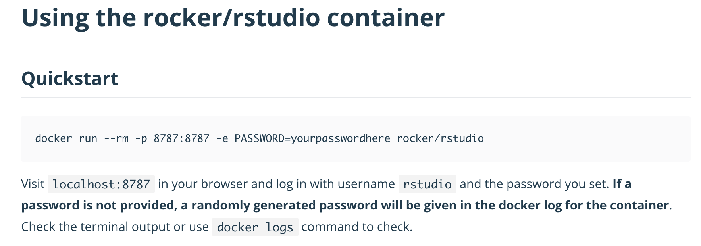

11 Using and running containers
Learning Objectives
- Use the containerization software (e.g., Docker command line and Docker compose) to run the software needed for your analysis
- Use port mapping with the containerization software to run web apps to access IDEs (e.g., Jupyter, RStudio, VSCode)
- Use volume mounting with the containerization software to allow the container access to local host files (e.g., analysis code and data files)
11.1 Launching containers using Docker at the command line
Docker has many ways we can run containers (GUI, command line, Docker compose configuration files). Here we will learn how to use the command line interface for running container instances from container images. We will then build on this knowledge to move to using Docker compose configuration files for increased efficiency. We are opting to use command line and configuaration file tools so that we can automate and scale the running of containers. It is also more reproducible.
Below we demonstrate how to launch and run containers using the continuumio/miniconda3 image as an example. We will slowly walk through the 4 basic steps need to run a container:
Step 1 - launch the Docker app (for OSX & Windows only)
On Mac and Windows, Docker runs in a virtual machine (called Docker Desktop). To run a Docker container, you must have this running. To do this, use launchpad/Finder/Start menu/etc to find and launch Docker Desktop.
Note: Docker might already be running, if so great, but if its not, the commands below will not work. So it is always good to check!
Step 2 - get container image from Docker Hub
To run a container instance, you need to have a container image locally. One way to get a container image locally is to pull (i.e., download) one from a container registry like Docker Hub. To do this we use the docker pull <CONTAINER> command. You will commonly see the container to pull written as: container_registry/container_user/container_image:container_image_version_tag.
If you only see container_user/container_image:container_image_version_tag Docker will assume you are using Docker Hub as the container registry (this is the default). Sometimes the container_image_version_tag is ommitted, when this happens the most recent container is pulled, and has the version tag latest. In data analysis projects we try to avoid using this strategy because Docker is lazy and if you already have the latest version on your local host machine, it will not update it when you re-run docker pull container_user/container_image even if there is a newer version of the container image on the remote container registry.
We will now pull the miniconda3 docker image, container image verion 23.9.0-0, made and shared by continuumio, and hosted on Docker Hub by runnig the following in the terminal:
docker pull continuumio/miniconda3:23.9.0-0We can verify that it successfully pulled by typing: docker images. When you do that, you should see something like:
REPOSITORY TAG IMAGE ID CREATED SIZE
continuumio/miniconda3 23.9.0-0 55e8b7e3206b 3 weeks ago 457MBYou can skip this step and just got onto
docker run ...as that command will pull the image if you do not have it locally.If you ever need to delete a container image from your computer, you can run
docker rmi <IMAGE_ID>to do so.
Step 3 - launch a container from the image and poke around!
We use docker run to launch a container instance from a container image. By default the container instance will execute it’s programmed launch behaviour and immediately stop. Thus, if we want to use the container in a more interactive way, we need to tell Docker that by adding the -it flag to our docker run command.
docker run -it continuumio/miniconda3:23.9.0-0`If it worked, then your command line prompt should now look something like this:
root@5d8e6fff1b12:/#You can standard bash shell commands like ls, cd, pwd to explore the container. You can type exit to leave when you are done (your prompt will look normal again)!
Step 4 - clean up your container!
After you close a container it still “hangs” around… It has stopped running but the container instance still exists in memory (reminder - you can view any existing containers using docker ps -a). You can remove the container by typing docker rm <container_id>. After you remove the container you can prove to yourself that the container is no longer “hanging around” via docker ps -a, but that you still have the image installed (which you can see via docker images).
Note: to remove running containers, you will need to first stop them via
docker stop <container_id>
That’s a lot of work…
We walked through those steps slowly to that you understand how everything is working. It is not the most efficient way to work with Docker container instances however when using docker run. What we typically do is tell Docker to delete the container upon exit using the --rm flag in the run command.
The command below runs a new container instance from the same image. This one command is equivalent to steps 2-4 above!
docker run \
--rm \
--it \
continuumio/miniconda3:23.9.0-0we are using \ above to split a bash command across lines to make it more readable. You will see that throughout this chapter.
11.1.1 Mounting volumes to containers
Often times we want to use the software made available to us in containers on files on our computers. To do this, we need to explicitly tell Docker to mount a volume to the container. We can do this via: -v <path_to_computer_directory>:<absolute_path_to_container_directory>
Often, we want to mount the volume from our current directory (where we are working) and we can do that with a short-form of /$(pwd) in place of the path to our computer’s directory.
To mount our current directory to a container from the continuumio/miniconda3 image we type the following on your laptop:
docker run \
--rm \
-it \
-v /$(pwd):/home/my_mounted_volume \
continuumio/miniconda3Navigate to the directory where you mounted your files via: cd /home/my_mounted_volume and type ls to ensure you can see them.
if you are mounting volumes to a container from a Docker image that runs a web app, be sure to read the documentation to see where you should mount that volume. Usually the web apps are only exposed to certain directories and you will only be able to access the files in the mounted volume if you mount them to the correct place. For example, in the rocker/rstudio image that we loaded earlier, volumes need to be mounted within /home/rstudio/ to be able to access them via the RStudio server web app.
Windows notes for mounting volumes:
- Windows machines need to explicitly share drives with Docker - this should be part of your computer setup!
- On Windows, the laptop path depends what shell you are using, here are some details:
- If you are going to run it in Windows terminal, then the command to share the current directory should be:
docker run --rm -it -v /$(pwd):<PATH_ON_CONTAINER> <IMAGE_NAME>- If you are going to run it in Power Shell, then the command should be:
(docker run --rm -it -v <ABSOLUTE_PATH_ON_YOUR_COMPUTER>:<PATH_ON_CONTAINER> <IMAGE_NAME>pwdand variants do not seem to work). And the path must be formatted like:C:\Users\tiffany.timbers\Documents\project\:/home/project
11.1.2 Mapping ports to containers with web apps
Docker documentation on Container networking
If we want to use a graphical user interface (GUI) with our containers, for example to be able to use the computational environment in the container in an integrated development environment (IDE) such as RStudio or JupyterLab, then we need to map the correct port from the container to a port on our computer.
In computer science, ports are points where network connections start and end. They can be physical (e.g., USB ports, Ethernet ports, etc) or virtual. In the case of virtual ports, they are really a software-based addressing mechanism that identifies points to connect specific processes or types of network services. When we are discussing ports in the context of containerization, we are referring to virtual ports.
To do this, we use the -p flag with docker run, specifying the port in the host (your computer) on the left-hand side, and the port on the container/Docker host on the right-hand side of :. For example, to run the rocker/rstudio container image we would type -p 8787:8787 to map the ports as shown in the docker run command below:
docker run \
--rm \
-p 8787:8787 \
-e PASSWORD="apassword" \
rocker/rstudio:4.4.2Then to access the web app, we need to navigate a browser url to http://localhost:<CONTAINER_PORT>. In this case we would navigate to http://localhost:8787 to use the RStudio server web app from the container.
Note that we can only map one port on our computer (the container/Docker host) to a container at any given time. However, our computer (the container/Docker host) has many ports we can choose from to map. So if we wanted to run a second rocker/rstudio container, then we could map it to a different port as shown below:
docker run \
--rm \
-p 8788:8787 \
-e PASSWORD="apassword" \
rocker/rstudio:4.4.2When we do this, to run the app in a browser on our computer, we need to go to http://localhost:8788 (instead of http://localhost:8787) to access this container as we mapped it to the 8788 port on our computer (and not 8787).
Another important note is that the container port is specific to the container, and the web app installed therein. So we cannot change that without changing the container image, and/or application installed therein. Where do you learn what port is exposed in a container image? The image documentation should specify this. For example, in the rocker/rstudio container image documentation it states:

11.1.3 Specifying the image architecture/platform
Newer M1 and M2 Macs use a new processor chip, called ARM, that is a different architecture compared to the previous Macs, and current Windows and Linux machines (which use Intel Processors). Given that containerization software virtualizes at the level of the operating system user space, these different architectures lead to building containers with different architectures.
Also given that Newer M1 and M2 Macs are still the minority of computers in use, it is a better practice to work with container architectures that work for the majority of in use computers, which are those that have Intel Processors. To tell Docker to do this, we add the --platform=linux/amd64 argument to our Docker run and build commands.
To make this process even smoother and less error prone, we should also set our Docker Desktop to use Rosetta 2 x86/AMD64 emulation on M1/M2 Macs . To use this, you must: - make sure Rosetta 2 is installed on your Mac (instructions to install it here) - Select “Use Virtualization framework” and “Use Rosetta for x86/amd64 emulation on Apple Silicon” in the General settings tab of Docker Desktop.
- In computer science, emulation works to let you run run software and execute programs originally designed one computer system on another computer system. Emulation is similar to virtualization in concept, but differs from it in that it focuses on enabling software designed for entirely different architectures to be executed.
- You must also be using macOS Ventura or later to use this feature.
- You will still need to use the
--platform linux/amd64command when building or running images even when using Rosetta 2 emulation, because your computer can run and build bothlinux/arm64andlinux/amd64images. So you have to be clear which architecture you want to work with.
11.1.4 Changing the containers default command
When we launch containers, they execute the command at runtime that was specified in their Dockerfile. For example, in the case of the Rocker and Juypter images, this default behaviour is to run a web app. Sometimes the default container behaviour is not what we want to do. Instead we want to do something different, like run the container as a Bash shell to test out some installation commands (common when we are building and customizing our own containers) or using the container to run a script non-interactively (like executing a data analysis pipeline from beginning to end).
To do this, we can append a new command to the end of our docker run commands. For example to open the rocker/rstudio:4.3.2 image in an interactive bash shell, we would run:
docker run \
--rm \
-it \
rocker/rstudio:4.4.2 \
bashNotice the command above does not specify the ports, nor does it set the password. This is because in this instance, we are not using this container to run it as a web app, we are just running it as a bash shell (which needs no ports, nor authentication).
The general form for for running things non-interactively is this:
docker run \
--rm \
-v PATH_ON_YOUR_COMPUTER:VOLUME_ON_CONTAINER DOCKER_IMAGE PROGRAM_TO_RUN \
PROGRAM_ARGUMENTSWhat of instead running the container interactively, we wanted to run a script? Let’s take this R script, named snowman.R, shown below, which uses the cowsay::say function to print some asci art with a cute message!
# snowman.R
library(cowsay)
say("Snow again this week?", "snowman")Assuming that script is in our current working directory, we can mount volumes and then run the script as follows:
$ docker run \
--rm \
-v /$(pwd):/home/rstudio \
ttimbers/dockerfile-practice:v0.1.0 \
Rscript /home/rstudio/snowman.RWhich should result in:
-----
Snow again this week?
------
\
\
_[_]_
(")
>--( : )--<
(__:__) [nosig]Now that was a silly example, but this can be made powerful so that we can run an analysis pipeline, such as a Makefile non-interactively using Docker!
Let’s do this exercise to demonstrate:
Clone this GitHub repository: https://github.com/ttimbers/breast_cancer_predictor_py
Navigate into the root of the
breast_cancer_predictor_pyproject on your computer using the command line and enter the following command to reset the project to a clean state (i.e., remove all files generated by previous runs of the analysis):
docker run \
--rm \
-v .:/home/jovyan \
ttimbers/breast_cancer_predictor_py:d285fc9 \
make clean- To run the analysis in its entirety, enter the following command in the terminal in the project root:
docker run \
--rm \
-v .:/home/jovyan \
ttimbers/breast_cancer_predictor_py:d285fc9 \
make allNote: If you are on a M1/M2 Mac, don’t forget to include --platform=linux/amd64 in your run command.
11.2 Docker command line commands
The table below summarizes the Docker commands we have learned so far and can serve as a useful reference when we are using Docker:
11.2.1 Docker commands
| command/flag | What it does |
|---|---|
pull |
Downloads a Docker image from Docker Hub |
images |
Tells you what container images are installed on your machine |
rmi |
Deletes a specified container image from your machine |
ps -a |
Tells you what containers are running on your machine |
stop |
Stops a specified running container |
rm |
Removes a specified stopped container |
run |
Launches a container from an image |
exit |
Exits a Docker container |
11.2.2 Docker run commands
| command/flag | What it does |
|---|---|
-it |
Tells Docker to run the container interactively |
--rm |
Makes a container ephemeral (deletes it upon exit) |
-v |
Mounts a volume of your computer to the Docker container |
-p |
Specifies the ports to map a web app to |
-e |
Sets environment variables in the container (e.g., PASSWORD=“apassword”) |
--platform |
Specifies the image architecture, commonly used on M1/M2 Macs to set it to linux/amd64 |
11.3 Docker compose to launch containers
It can be fiddly and error prone to type long commands into the terminal, or a GUI every time you want to launch a container. A better approach is to use Docker compose to specify how you want to launch the container.
Docker compose uses a YAML file, specifically named docker-compose.yml, to record how the container should be launched. This file can include details including: - the docker image and version to use - how to mount volumes - what ports to map - what environment variables to set.
Here is an example of a docker-compose.yml file for use with the rocker/rstudio container image:
services:
analysis-env:
image: rocker/rstudio:4.4.2
ports:
- "8787:8787"
volumes:
- .:/home/rstudio/project
environment:
PASSWORD: passwordTo launch the container interactively using this file, you would type the docker-compose command shown below.
docker-compose upIf you are using a web app, as in the case of the rocker/rstudio or jupyter/minimal-notebook container images, you still need to manually navigate to the web app in your browser and enter the correct URL to access it.
To stop and clean up the container, you would type Cntrl + C in the terminal where you launched the container, and then type
docker-compose rmLet’s take a look at an example docker-compose.yml being used in a project: - https://github.com/ttimbers/breast_cancer_predictor_py
11.4 Running a Docker container non-interactively using the Docker Compose
We can also use Docker Compose to run containers non-interactively! We can do this by specifying that we want to run the container (instead of up to launch in interactively). We use the --rm flag with the run command to make the container ephemeral (delete it upon exit). Then we specify the name of the service from the docker-compose.yml file that we want to run (in our docker-compose.yml files so far we only have one service, the environment for running the analysis). And finally we add the command we want to run non-interactively using the container (in the example below we use make to run the data analysis pipeline script).
docker-compose run --rm analysis-env make all